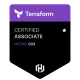

Cloud · Backend · AI Engineering
Hi, I'm Bhargavi Poyekar.
I take systems from idea to production: cloud infrastructure, backend services and AI applications, built to be reliable and easy to use. Currently an Associate Software Engineer at K2Q Capital.
About
I'm a software engineer who works across the stack. I design cloud infrastructure on AWS with Terraform, build backend services in Python, and lately build AI applications: retrieval-augmented generation, local and hosted LLMs, and the evaluation that shows whether they actually work.
I like problems that need the whole picture: understanding what users need, building it end to end, and measuring the result instead of assuming it. I write about what I build on Medium, explaining technical work in plain language.
- MS Computer Science
- UMBC · GPA 3.85/4
- 3 certifications
- AWS (2) · Terraform
- Focus
- Cloud · Backend · AI
Experience
-
Associate Software Engineer · K2Q Capital
Aug 2025 – Present
- Refactored and scaled a distributed financial data pipeline in Python on GCP (Cloud Run, Cloud Scheduler, Pub/Sub), replacing manual daily work with automation and using a strategy-based architecture, error handling and monitoring so new data sources plug in cleanly.
- Designed and built a Dash financial analytics platform on GCP with Cloud Run, Cloud Storage, DuckDB and Memorystore (Redis), using efficient queries and caching over large datasets to make dashboards load much faster.
- Automated an equity-data pipeline with daily scheduling, and added LangGraph-based LLM validation with web search to verify newly added companies automatically.
- Built a large-scale LLM-powered pipeline for SEC 10-K filings that automates retrieval, extracts the Business and Risk Factors sections, and produces year-wise Parquet datasets for analysis and data-quality checks.
-
Software Engineer · University of Maryland, Baltimore County
Jun 2024 – Jun 2025
- Built backend infrastructure to provision virtual lab environments for 50+ students with Terraform, Ansible and vCenter APIs, including segmented internal, external and DMZ networks.
- Wrote modular Infrastructure-as-Code and deployment automation, speeding up environment setup by 90% and making it reusable across courses.
- Connected VM provisioning to a web dashboard, giving instructors self-service control and saving 30+ hours per semester.
-
Software Engineer (Cloud) Intern · University of Maryland, Baltimore County
Jun 2023 – May 2024
- Automated the configuration of 50 Linux VMs with Ansible, standardising system settings, tools, documentation and permissions so 100+ students and faculty had consistent environments for course exercises.
- Designed and deployed Capture the Flag (CTF) exercises across the VM infrastructure, automating challenge setup, configuration and reset with Ansible.
-
Software Developer Intern · Origin Cloud Tech, India
Jun 2020 – Dec 2020
- Developed a scalable learning management system with the Laravel MVC framework.
- Strengthened security with OAuth2 and multi-factor authentication.
- Integrated third-party REST APIs: payment gateways (PayPal, Razorpay), location services and Zoom.
- Designed a normalised database with optimised SQL queries, and built the interface with HTML5, CSS3, Bootstrap and JavaScript.
-
Website Developer Intern · Ask in City, India
Jan 2020 – May 2020
- Designed and built new e-commerce features with HTML, JavaScript, Ajax and PHP, raising user engagement by 8%.
- Used secure SQL practices, parameterised queries and prepared statements, to protect against SQL injection.
- Worked in an agile team and improved collaboration, cutting project completion time by 10 days.
Education
-
MS in Computer Science
University of Maryland, Baltimore County · 2022 – 2024 · GPA 3.85/4
-
BTech in Computer Engineering
Sardar Patel Institute of Technology, University of Mumbai · 2018 – 2022
Featured projects
-
AI · Backend
RTFM Agent
An AI assistant for AWS's Python SDK: ask a question and get working code, the IAM policy it needs, and citations to the official docs.
- End-to-end RAG pipeline over 2,800 Boto3 docs pages, a local Llama 3.1 model (Ollama) and a FastAPI endpoint.
- Checks every IAM permission in a generated policy against the retrieved docs, flagging invented actions.
- Evaluated on a labelled question set: on the development questions, the right page ranks first 78% of the time.
-
Backend · Systems
MyRedis
A Redis-compatible in-memory database server built from scratch with Python and AsyncIO.
- TCP networking, RESP protocol, AOF persistence, Pub/Sub, TTL expiry and LRU eviction.
- 12,500+ requests/sec with P50 latency under 1 ms in benchmarks; containerised with Docker.
-
Cloud · Security
Hadoop to AWS
A Python application that moves files from Hadoop HDFS to Amazon S3 securely and observably.
- IAM policies, KMS encryption in transit and at rest, and credentials in Secrets Manager.
- Data integrity checks, CloudWatch monitoring and SNS alerts on success or failure.
-
Distributed systems
Token Manager
A replicated client-server token service in Go using gRPC and Protocol Buffers.
- Each token is a (1,N) register with atomic semantics, kept consistent by a read-impose-write-all quorum protocol.
- Fail-silent nodes: a server can crash-stop on one token while still serving others.
More projects
- Receipt Processing APIFlask REST API with pytest, Postman tests and Docker
- Car Booking SystemJava RMI with Berkeley clock sync, ring election and replicated writes
- Multithreaded AverageCoordinator and worker goroutines communicating over channels in Go
- Eye Pupil ResponseScikit-learn model predicting task difficulty from pupil data (70% accuracy)
- EmoMusicCNN emotion detection with music recommendations, built with Django
- Computer Security labsMITM with arpspoof, DoS attacks and ufw defences, Diffie-Hellman with RC4
- Domestic Violence Support AppFlutter and Firebase app connecting survivors with counsellors and NGOs
- Blog MasterLaravel blog with authentication, categories and search
Skills
- Cloud
- AWS (EC2, S3, Lambda, IAM, VPC, CloudWatch, SNS, STS, SSM, KMS), GCP (Cloud Run, Pub/Sub)
- Infrastructure & DevOps
- Terraform, Docker, Ansible, GitHub Actions, CI/CD, Linux, vCenter
- Backend
- Python, FastAPI, Django, Flask, REST APIs, Node.js, PHP / Laravel
- AI / ML
- RAG, LLMs (Ollama, OpenAI), LangGraph, Sentence-Transformers, ChromaDB, Scikit-learn, TensorFlow
- Data
- SQL, PostgreSQL, MySQL, SQLite, DuckDB, Redis, MongoDB, Pandas, NumPy
- Languages
- Python, Go, JavaScript, Java, C, SQL
- Testing & tools
- pytest, Postman, Git
Certifications
-

Writing
Blog series on Medium
Building RTFM
A build log of an AI documentation assistant, from scraping and chunking to embeddings, hybrid search and evaluation. It covers what worked, what didn't, and why measuring beats guessing.
Read on MediumContact
I'm open to conversations about engineering roles across cloud, backend and AI. The best way to reach me is email or LinkedIn.